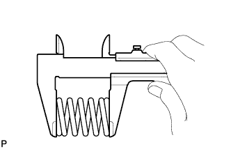

ВЫПУСКНАЯ ТРУБА > УСТАНОВКА |
| 1. INSTALL FRONT EXHAUST PIPE ASSEMBLY |
Install a new gasket and the front exhaust pipe to the exhaust manifold with 3 new nuts.
Install the No. 1 exhaust pipe support bracket with the 2 bolts.
Install the clamp with the bolt.
| 2. INSTALL CENTER EXHAUST PIPE ASSEMBLY |
|  |
Using a vernier caliper, measure the free length of the compression spring.
Using a plastic-faced hammer and wooden block, tap on a new gasket until its surface is flush with the front exhaust pipe.
| *1 | Gasket |
| *2 | Wooden Block |
Connect the center exhaust pipe to the 4 exhaust pipe supports.
Install the center exhaust pipe with the 2 compression springs and 2 bolts.
| 3. INSTALL TAILPIPE ASSEMBLY |
Connect the tailpipe to the exhaust pipe support.
Install a new gasket to the center exhaust pipe.
Connect the tailpipe to the center exhaust pipe.
Install the 2 bolts.
| 4. INSPECT FOR EXHAUST GAS LEAK |